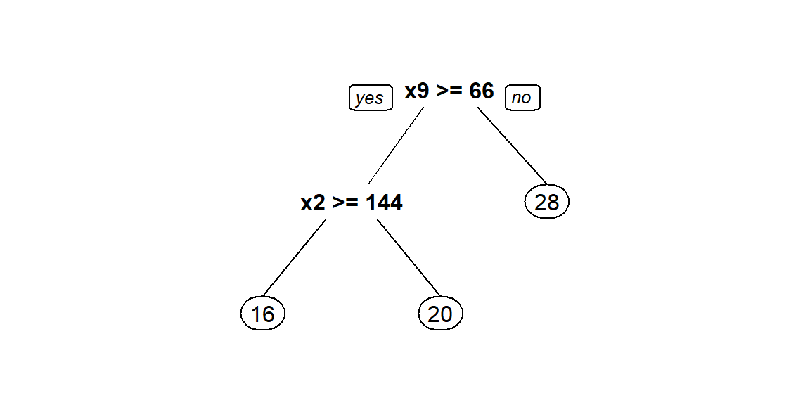

1 Árboles de regresión
Los árboles de regresión son árboles de decisión para asignar un valor de \(\hat{y}\) dependiendo de los valores de las covariables. Para conocer más sobre el tema se recomienda ver este video.
El paquete rpart (Therneau and Atkinson 2018) es uno de los paquetes que se pueden usar para crear árboles de regresión. La función para crear un árbol de regresión es rpart, a continuación la estructura de la función.
rpart(formula, data, weights, subset, na.action = na.rpart, method,
model = FALSE, x = FALSE, y = TRUE, parms, control, cost, ...)Ejemplo
En este ejemplo se busca encontrar un modelo de regresion lineal que explique la variable respuesta \(y\) en función de las covariables \(x_1\) a \(x_{11}\), los datos provienen del ejercicio 9.5 del libro de Montgomery, Peck and Vining (2003). El paquete MPV (Braun 2018) contiene todos los datos que acompañan al libro.
A continuación se muestra el encabezado de la base de datos y la definición de las variables.

Figure 1.1: Ilustración de los métodos Forward y Backward.
Nota: Type of transmission (1=automatic, 0=manual).
Antes de iniciar es necesario revisar si hay NA's y eliminarlos.
library(MPV) # Aqui estan los datos
table.b3[22:26, ] # Can you see the missing values?## y x1 x2 x3 x4 x5 x6 x7 x8 x9 x10 x11
## 22 21.47 360.0 180 290 8.4 2.45 2 3 214.2 76.3 4250 1
## 23 16.59 400.0 185 NA 7.6 3.08 4 3 196.0 73.0 3850 1
## 24 31.90 96.9 75 83 9.0 4.30 2 5 165.2 61.8 2275 0
## 25 29.40 140.0 86 NA 8.0 2.92 2 4 176.4 65.4 2150 0
## 26 13.27 460.0 223 366 8.0 3.00 4 3 228.0 79.8 5430 1datos <- table.b3[-c(23, 25), ]El objeto datos tiene la base de datos sin las líneas con NA, lo mismo se hubiese podido realizar usando la función na.omit. La base de datos tiene 30 filas y 12 columnas.
library(rpart)
library(rpart.plot)mod <- rpart(y ~ x1 + x2 + x3 + x4 + x5 + x6 + x7 + x8 + x9 + x10 + x11,
data=datos)Dibjuemos el árbol con prp que es una función del paquete rpart.plot (Milborrow 2019).
prp(mod)
Construyamos nuevamente el árbol pero explorando todas las opciones de la función prp.
prp(mod, main="",
nn = TRUE, # display the node numbers
fallen.leaves = TRUE, # put the leaves on the bottom of the page
shadow.col = "gray", # shadows under the leaves
branch.lty = 3, # draw branches using dotted lines
branch = .5, # change angle of branch lines
faclen = 0, # faclen = 0 to print full factor names
trace = 1, # print the auto calculated cex, xlim, ylim
split.cex = 1.2, # make the split text larger than the node text
split.prefix = "is ", # put "is " before split text
split.suffix = "?", # put "?" after split text
split.box.col = "lightblue", # lightgray split boxes (default is white)
split.border.col = "darkgray", # darkgray border on split boxes
split.round = 0.5) # round the split box corners a tad## cex 1 xlim c(0, 1) ylim c(0, 1)Usando la información del árbol anterior es posible predecir el valor de \(y\). Por ejemplo:
- Si una nueva observación tiene \(x_9=70\) y \(x_2=100\), entonces \(\hat{y}=20\).
- Si otra observación tiene \(x_9=60\) y \(x_2=150\), entonces \(\hat{y}=28\).
Como en el árbol anterior solo aparecen las variables \(x_2\) y \(x_9\) se recomienda volver a construir el árbol sólo con ellas.
mod <- rpart(y ~ x2 + x9, data=datos)Para predecir los valores de \(y\) se puede usar la función predict. A continuación el código para predecir la respuesta en los dos casos anteriores.
nuevos_datos <- data.frame(x2=c(100, 150), x9=c(70, 60))
predict(object=mod, newdata=nuevos_datos)## 1 2
## 19.66875 28.06625En este ejemplo los datos originales se usaron como conjunto de entrenamiento y prueba debido a que solo se cuentan con 30 observaciones.
Entre más cerca estén las \(\hat{y}\) de los \(y\) observados se puede decir que el modelo es mejor. A continuación la correlación entre \(\hat{y}\) y \(y\).
y_hat <- predict(object=mod, newdata=datos)
cor(y_hat, datos$y)## [1] 0.8300304¿Qué opina de este valor?
A continuación un diagrama de dispersión entre \(\hat{y}\) y \(y\).
plot(x=datos$y, y=y_hat, pch=20, las=1, xlab='y', ylab=expression(hat(y)))
abline(a=0, b=1, lty="dashed", col="blue")References
Therneau, Terry, and Beth Atkinson. 2018. Rpart: Recursive Partitioning and Regression Trees. https://CRAN.R-project.org/package=rpart.
Braun, W. J. 2018. MPV: Data Sets from Montgomery, Peck and Vining. https://CRAN.R-project.org/package=MPV.
Milborrow, Stephen. 2019. Rpart.plot: Plot ’Rpart’ Models: An Enhanced Version of ’Plot.rpart’. https://CRAN.R-project.org/package=rpart.plot.